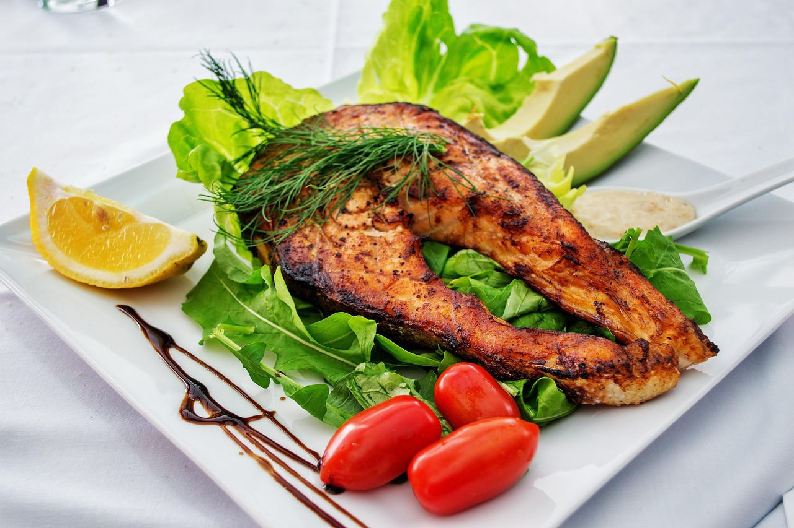

6 Menu Makanan Khas Kalimantan Timur 🌿

Soto Banjar Kaltim
Varian soto khas Kalimantan Timur dengan kuah bening dan bumbu rempah khas.
Bahan-bahan:
- 500 gr ayam kampung, potong
- 2 liter air kaldu
- 5 siung bawang putih, haluskan
- 5 siung bawang merah, haluskan
- 2 batang serai, memarkan
- 3 lembar daun salam
- 1 sdt pala bubuk
- Garam dan merica secukupnya
- 100 gr bihun, seduh air panas
- Telur rebus, daun bawang, dan bawang goreng untuk pelengkap
Cara membuat:
- Rebus ayam hingga empuk, sisihkan kaldu.
- Tumis bawang putih, bawang merah, serai, dan daun salam hingga harum, masukkan ke kaldu.
- Tambahkan pala, garam, dan merica, masak hingga kuah matang dan bumbu meresap.
- Siapkan mangkuk, tata bihun, ayam suwir, telur rebus, siram kuah soto.
- Taburi bawang goreng dan daun bawang, sajikan hangat.
Ayam Cincane
Ayam bakar khas Kalimantan Timur dengan bumbu manis dan rempah khas.
Bahan-bahan:
- 1 ekor ayam kampung, potong menjadi beberapa bagian
- 4 siung bawang merah
- 3 siung bawang putih
- 2 cm jahe
- 2 cm kunyit
- 3 sdm kecap manis
- 1 sdm gula merah
- Garam dan merica secukupnya
- Minyak untuk menumis
Cara membuat:
- Haluskan bawang merah, bawang putih, jahe, dan kunyit.
- Tumis bumbu halus hingga harum, masukkan kecap manis dan gula merah, aduk rata.
- Marinasi ayam dengan bumbu, diamkan minimal 1 jam.
- Bakar ayam sambil diolesi sisa bumbu hingga matang dan berwarna kecoklatan.
- Sajikan hangat dengan nasi putih dan sambal.

Ikan Baung Bakar
Ikan baung segar dibakar dengan bumbu rempah khas Kalimantan Timur.
Bahan-bahan:
- 1 ekor ikan baung segar, bersihkan
- 4 siung bawang merah
- 3 siung bawang putih
- 2 cm kunyit
- 2 cm jahe
- 2 batang serai, memarkan
- Garam dan gula secukupnya
- Minyak untuk menumis
Cara membuat:
- Haluskan bawang merah, bawang putih, kunyit, dan jahe.
- Tumis bumbu halus dengan serai hingga harum.
- Oleskan bumbu pada ikan hingga merata, diamkan 30 menit.
- Bakar ikan hingga matang sambil sesekali dioles bumbu.
- Sajikan hangat dengan sambal dan lalapan.

Nasi Kuning Kaltim
Nasi kuning dengan aroma khas rempah dan santan, hidangan istimewa Kalimantan Timur.
Bahan-bahan:
- 2 gelas beras
- 400 ml santan
- 2 batang serai, memarkan
- 3 lembar daun salam
- 3 cm kunyit, parut
- 2 siung bawang putih, haluskan
- Garam secukupnya
Cara membuat:
- Cuci beras hingga bersih.
- Rebus santan bersama serai, daun salam, kunyit, bawang putih, dan garam hingga mendidih.
- Masukkan beras, masak dengan api kecil sambil sesekali diaduk hingga santan meresap.
- Kukus nasi hingga matang dan harum.
- Sajikan dengan lauk pelengkap sesuai selera.

Kerupuk Amplang
Kerupuk khas Kalimantan Timur berbahan ikan tenggiri dengan tekstur renyah dan gurih.
Bahan-bahan:
- 250 gr ikan tenggiri giling
- 150 gr tepung tapioka
- 2 siung bawang putih, haluskan
- Garam dan merica secukupnya
- Minyak goreng untuk menggoreng
Cara membuat:
- Campur ikan tenggiri, tepung tapioka, bawang putih, garam, dan merica hingga adonan kalis.
- Giling adonan tipis-tipis, potong-potong sesuai selera.
- Jemur di bawah sinar matahari hingga kering.
- Goreng kerupuk hingga mengembang dan renyah.
- Tiriskan dan sajikan sebagai camilan atau pelengkap hidangan.

Roti Cane Kaltim
Roti tipis dan renyah yang disajikan dengan kuah kari khas Kalimantan Timur.
Bahan roti:
- 250 gr tepung terigu
- 150 ml air hangat
- 1 sdm minyak goreng
- 1/2 sdt garam
Bahan kuah kari:
- 300 gr daging sapi
- 2 siung bawang putih
- 5 siung bawang merah
- 2 cm jahe
- 2 batang serai
- 2 sdm bubuk kari
- 400 ml santan
- Garam dan gula secukupnya
Cara membuat roti:
- Campur tepung, garam, air, dan minyak, uleni hingga kalis.
- Diamkan adonan selama 30 menit.
- Bagi adonan, gilas tipis dan pipihkan.
- Goreng roti di wajan datar hingga kecoklatan dan renyah.
Cara membuat kuah kari:
- Tumis bawang merah, bawang putih, jahe, dan serai hingga harum.
- Masukkan daging, aduk hingga berubah warna.
- Tambahkan bubuk kari dan santan, masak hingga daging empuk dan kuah mengental.
- Beri garam dan gula, koreksi rasa.
- Sajikan roti cane dengan kuah kari hangat.